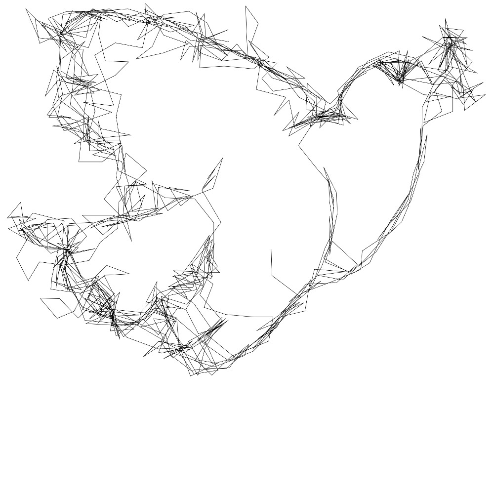

Oneline is an image creating program that generates images which are composed from a single line following a master image. This line starts at a random point and follows the dark parts of a master image. If the line gets long enough you may discover the original image in the line.
The image below is 'la colombe' from Picasso rendered with Oneline
